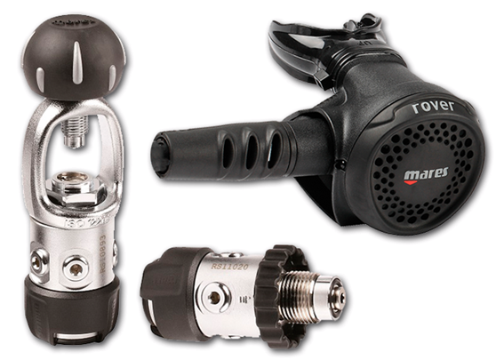

Centro de actividades nauticas
Disfruta de la bahia y su entorno natural. La zona ofrece condiciones ideales para la practica de deportes nauticos y actividades en el mar durante todo el ano.
Las playas, la biodiversidad y los vientos constantes crean un escenario perfecto para experiencias seguras y variadas, tanto para iniciacion como para niveles avanzados.

Un entorno privilegiado
La bahia de Santander y su entorno se han convertido en un lugar unico para disfrutar de actividades nauticas. Con temperaturas suaves en primavera y verano, es una zona ideal para entrenamientos, competiciones y ocio en el mar.
La combinacion de aguas tranquilas y zonas abiertas permite adaptar cada salida a las necesidades del grupo, con opciones para todas las edades.
Actividades disponibles


Aventura para todas las edades
Durante todo el ano, el estuario ofrece condiciones seguras para practicar actividades como piragua o paddle surf, con salidas adaptadas a cada grupo.
El objetivo es que disfrutes del mar con confianza, acompanado por un equipo experto y con opciones para todos los niveles.
